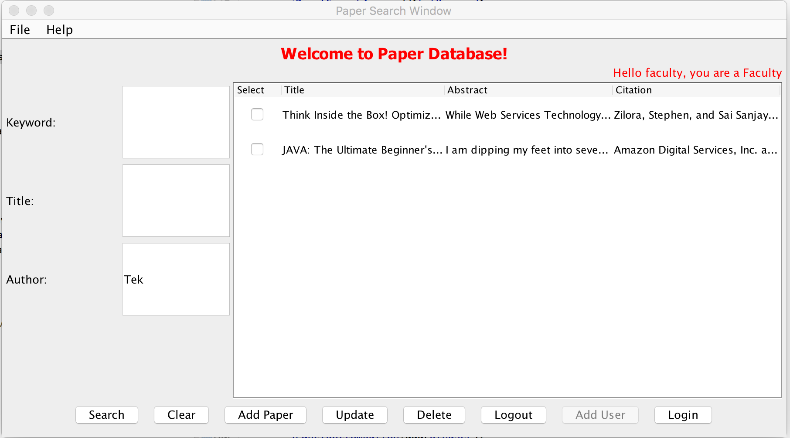

A user with Faculty login access can search and view all papers in the database. The faculty member has the access to update, add, modify and delete the papers which he or she owns.
● Faculty can search and view all the papers in the database using anyone of the search criteria like author or keyword or title.
Faculty can limit search to his/her owned paper by selecting the option of Limit to my articles only.
